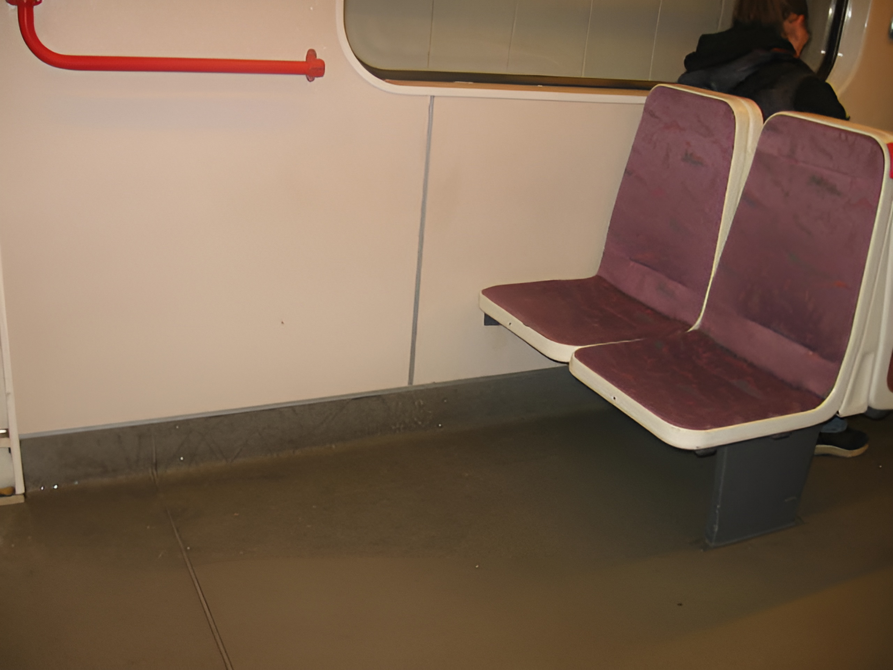

9.
The two psychological tendencies that underlie modern leftism we call “feelings of inferiority” and “oversocialization.” Feelings of inferiority are characteristic of modern leftism as a whole, while oversocialization is characteristic only of a certain segment of modern leftism; but this segment is highly influential.